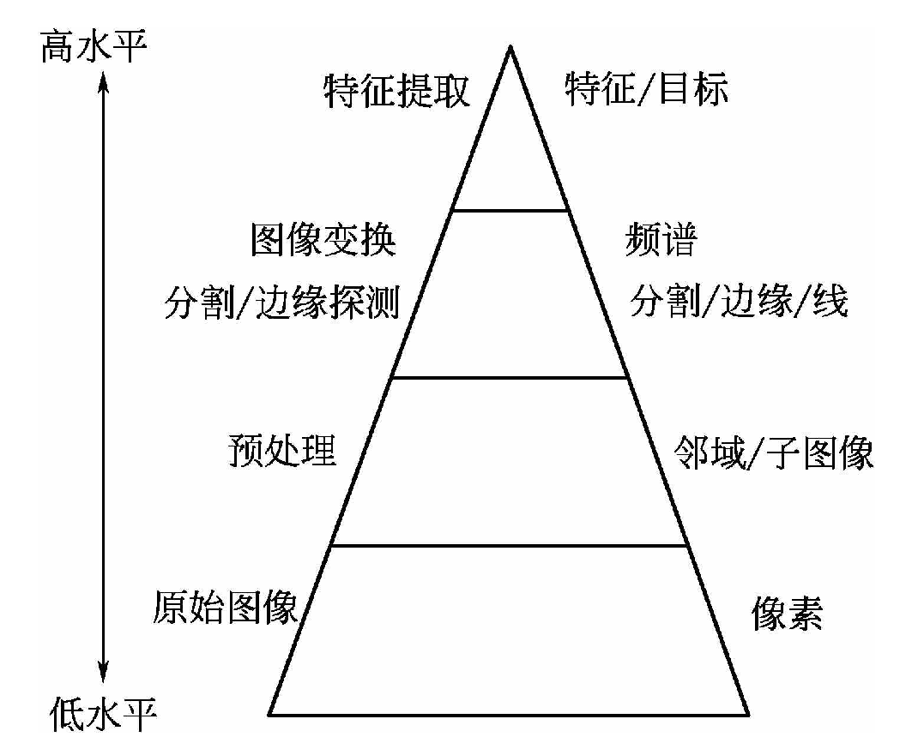
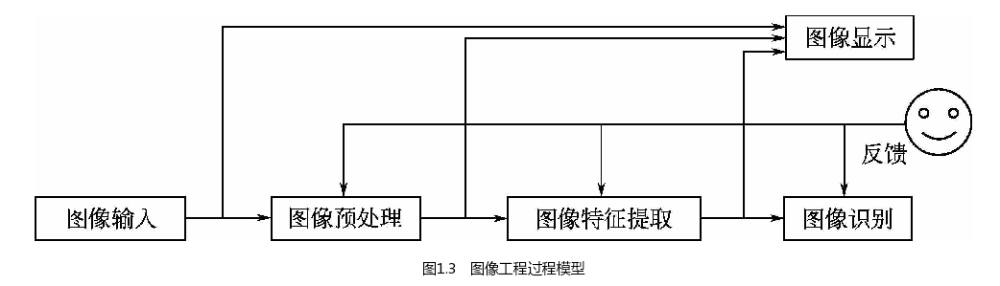

Introduction
图像处理(image processing)，用计算机对图像进行分析，以达到所需结果的技术
图像工程所涉及的研究内容按照抽象程度和智能化水平可分为三个层次，即图像处理、图像分析和图像理解：
图像处理
主要是对图像信息进行加工得到满足人的视觉心理或应用需求行为的图像，为目标自动识别和图像理解打下基础，或对图像进行压缩编码，以减少图像的存储空间或提高对其传输的速度等。大体上可以这样认为，图像处理是一个从图像到图像的过程，主要研究内容包括图像的采集与获取、图像变换、图像降低噪声的预处理滤波、图像对比度增强和图像锐化、图像复原、图像重建和图像编码等
图像分析
要求对图像中感兴趣的目标进行特征提取和测量，以获得目标的客观信息，从而帮助我们建立对图像的描述
特征提取
特征提取是计算机视觉和图像处理中的一个概念。它指的是使用计算机提取图像信息，决定每个图像的点是否属于一个图像特征(边缘、角点、区域或颜色、纹理、形状、空间关系特征等)
特征提取的结果是把图像上的点分为不同的子集，这些子集往往属于孤立的点、连续的曲线或者连续的区域
特征描述又称特征选择，选择特征是某些感兴趣的定量信息或区分一组目标与其他目标的基础
识别则是基于目标的描述给目标赋予标号的过程
图像理解
主要是指在图像处理及图像分析的基础上，进一步研究图像中的目标及其相互之间的联系，通过执行通常与人类视觉相关的感知函数，做出对图像内容含义的理解以及对原来客观场景的解释及总体确认，从而可以指导和规划行动。研究内容包括图像匹配、图像解释与推理等

图像工程的过程：
